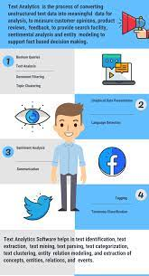
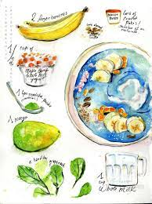
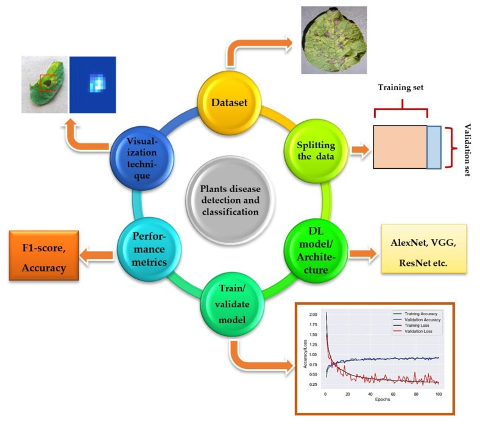

Projects

Artist Style Learning System - Style Transfer using GAN
- Built a deep learning Generative AI model to generate images of paintings using DCGAN with PyTorch.
- Enhanced the quality of generated images by devising a data-driven model using Cycle GAN and altering the style of images to that of Monet paintings, Van Gogh Paintings, and Abstract art.
- Upgraded accuracy of the model to 98% and applied federated learning to the model to improve resolution.

Golden Globe Awards Tweets Mining - Text Data Analysis
- Used Twitter development to implement data mining and web-scraping on tweets for business operations.
- Ensured accurate mapping of messy data using analytics with NLTK, Beautiful Soup, and Spacy and developed techniques to analyze data of winners, nominees, presenters, and hosts for Golden Globe Awards.
- Performed sentiment analysis from prescribed datasets with the help of tweets with a model accuracy of 95%.

Interactive Cookbook - Chatbot System Design
- Designed Conversational AI & speech assistant for parsing recipes and guiding users for cooking with Natural Language Processing(NLP) by automating the process through data segmentation.
- Built a chat to follow the user’s directives and transform the cuisine style & scripting using BERT, GPT, NLTK, and Spacy.
- Developed a QA platform for customer service with a decision-making chatbot for cooking by interactive GUI.

Plant Disease Categorization
- Devised a baseline CNN predictive models to perform image classification to identify plant diseases through supervised learning.
- Implemented transfer learning techniques on VGG19 and EfficientNet architectures with neural networks and TensorFlow to obtain model’s validation accuracy of 85%.
- Built and trained a novel model with GAN and Fastai improving model’s accuracy to 97% and generated
Skills
- JavaScript
- Python
- R
- Android Studio
- Node.js
- Pytorch
- React
- Tensorflow
- Java
- C
- C#
- C++
- NLTK
- Tableau
- Power Bi
- Spacy
- PostgreSQL
- Azure
- HTML
- CSS
- Flask